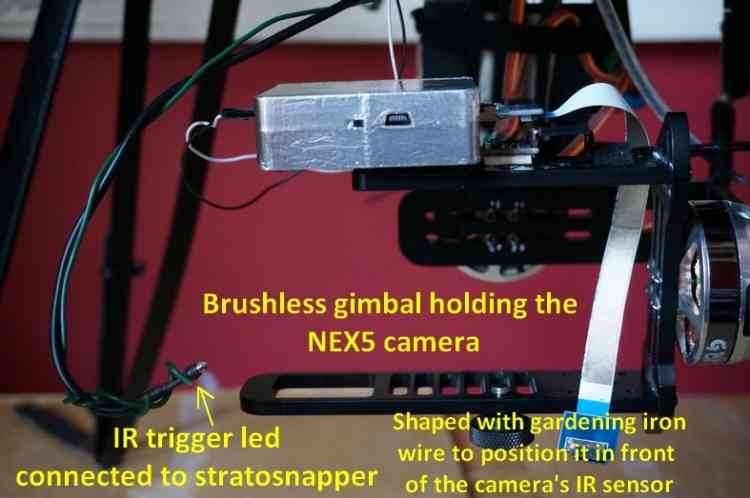

Camera Triggering using StratosnapperV2¶
This tutorial shows how connect the Stratosnapper V2 (with an IR Module) to a Sony NEX5 so that its shutter can be triggered from the pilot’s transmitter or during camera missions.
Where To Buy¶
This device is becoming increasingly rare but can still be found on mjmulticopter.com and ebay
Parts and hardware connections¶
The diagram below shows the required parts and general cabling. This includes the Pixhawk, IR Trigger device (Stratosnapper), IR LED and camera, and the BEC to power the Stratosnapper.


Pixhawk board¶
Pixhawk has 6 AUX ports that may be used for triggering the camera (see AUX1-AUX6 = RC9-RC14). This tutorial uses port 2/AUX2, as shown in the diagram below:

IR trigger device¶
The Stratosnapper with its inputs/outputs is shown below. The servo inputs can be push-buttons, sticks, two or three-way switches, etc. These are configured using a GUI configuration utility from your PC via USB.

Note the two servo leads are connected on the input side of Stratosnapper; one of these is to power the IR module.
Warning
It is not possible to power the IR module (or any other device) from the Pixhawk AUX ports. You must either power provide a separate BEC to power the IR device or power the Pixhawk outputs rail with a BEC and power the device off that.
The control signal from Pixhawk can be assigned to any of the 4 servo inputs.

The output of the Stratosnapper is shown below. It connects to an IR cable, which in turn triggers a IR led that must be placed in front of your camera IR sensor:

IR LED positioning and camera gimbal¶
The Sony NEX5 is held in a 2-axis stabilized brushless gimbal (NEX5 not shown). Here below a zoomed view of the IR LED positioning and gimbal:
{kind=link}
The IR LED works well even in bright sunlight (verified in the field). It also works some distance from the sensor (no problem within 5inches of the Sony NEX5 sensor) and in any orientation with respect to the sensor.
Camera shutter configuration in Mission Planner¶
The Camera Shutter Configuration in Mission Planner article explains how to configure Pixhawk AUX output as a servo camera trigger.
The parameters used to configure this Stratosnapper/IR/NEX5 hardware are listed below:
CAM_TRIG_TYPE: 0 (Servo).Shutter (Port): RC10 (AUX2).Shutter Pushed: 1800Shutter Not Pushed: 1100Shutter Duration: 10 (1 second)Servo Limits Max: 1900Servo Limits Min: 1100CH7_OPT: 9 (Optional - enables manual shutter triggering on Copter only).

Mission Planner: Camera GimbalSetup Screen¶
IR device configuration (Stratosnapper V2)¶
Every IR device has its own configuration method. Stratosnapper comes with a simple GUI interface to define which PWM values will trigger what port.
The IR device configuration is explained in this video
Testing and mission planning¶
Once a camera trigger has been defined it can be used in Camera Control and Auto Missions to take pictures and make area surveys.
The configuration in this article was tested when creating the Survey (Grid) Example.